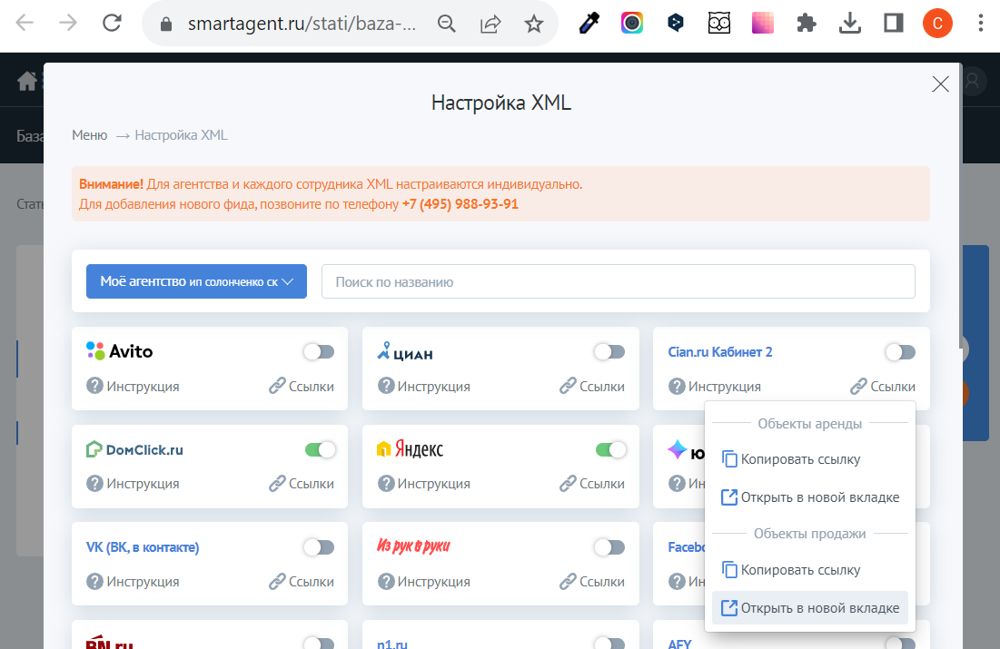
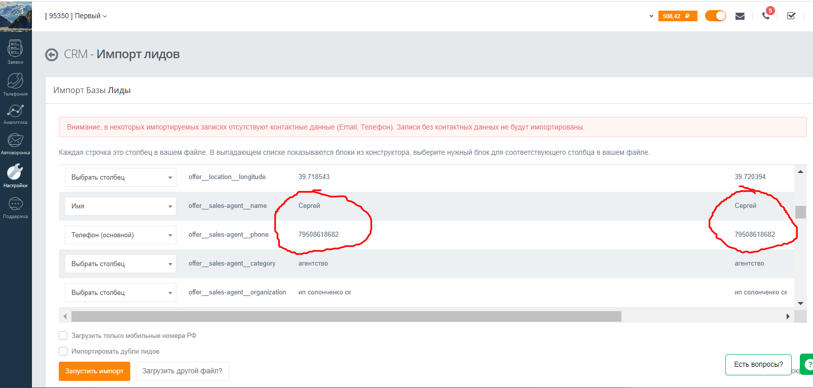
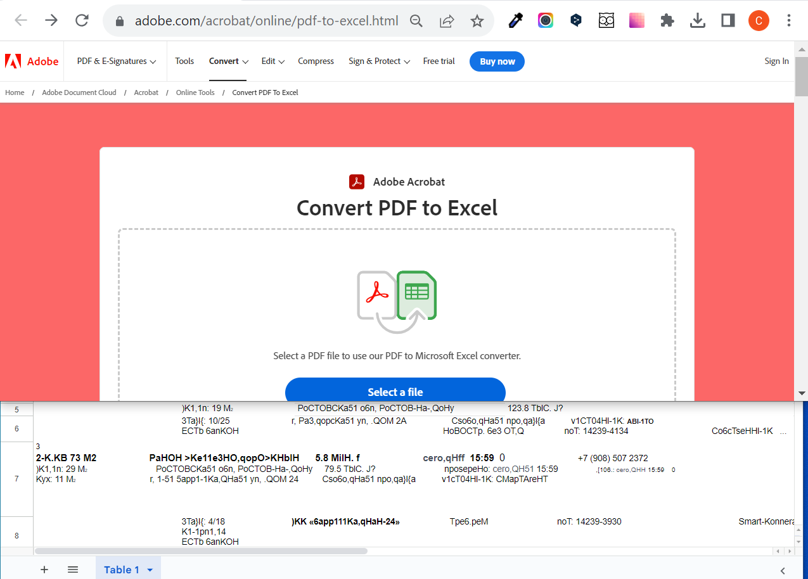
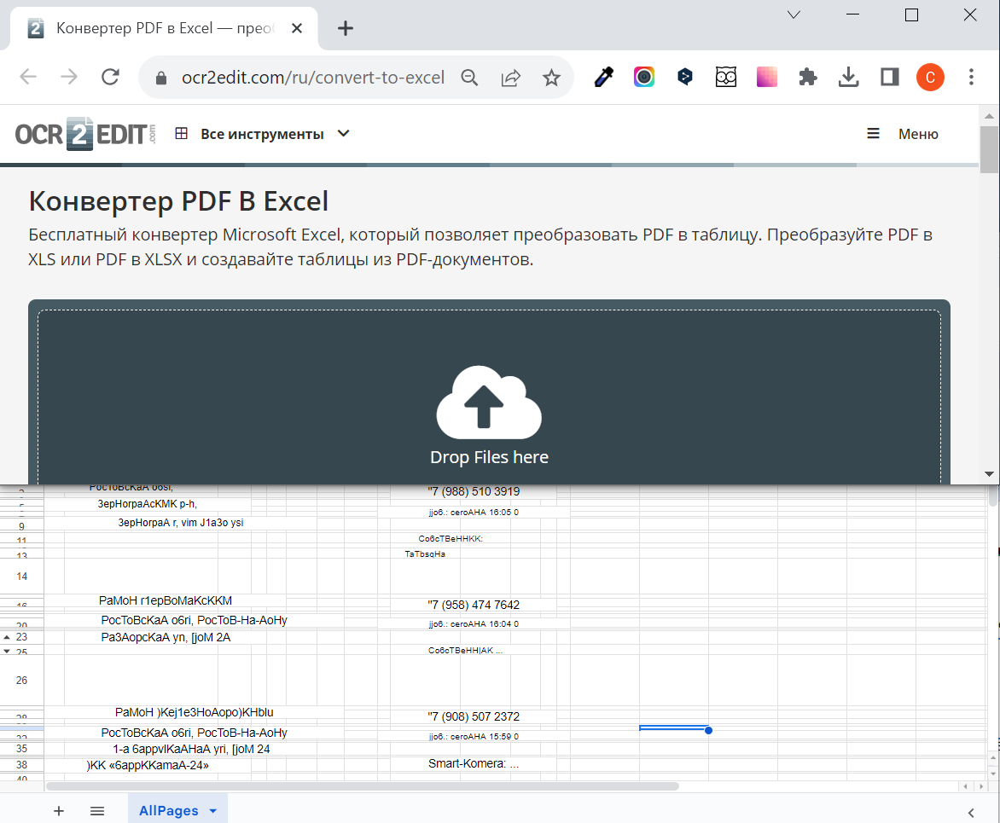
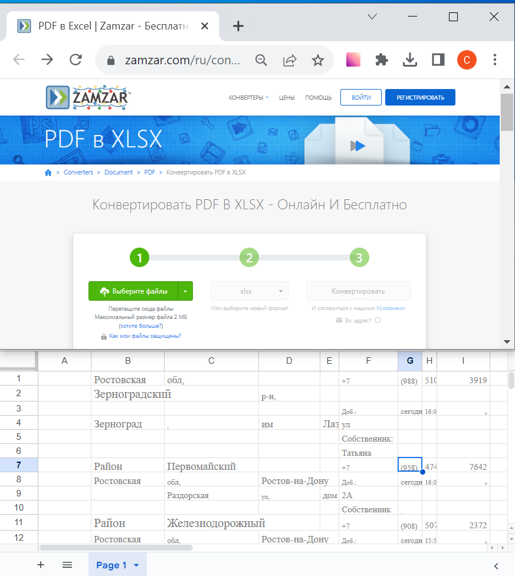
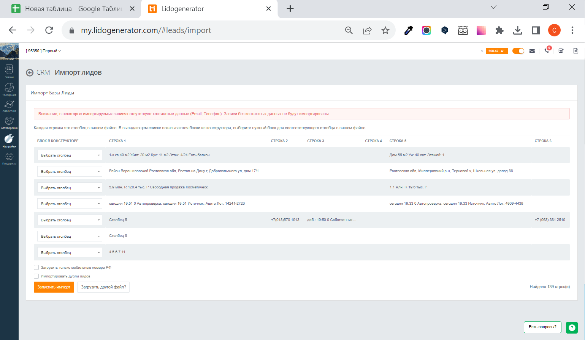

В тех поддержке смарт агента на вопрос, как в формате Excel либо в формате CSV скачать телефоны и имена собственников, ответили так:
в данный момент на действующем тарифе нет возможности выгрузить все данные, которые мы видим на сайте смарт агента (включая номера телефонов собственников) в формате эксель. Доступна исключительно печать в файл в формате pdf.
У них есть другой тариф стоимостью 50 тыс. руб., в котором можно получить доступ к их базе API.
Почему для загрузки на сайт Lidogenerator не подходит файл в формате XML, скачанный отсюда:
После конвертации из формата XML в формат CSV этот файл успешно загружается в приложение Lidogenerator.
Но проблема в том, что в этом файле нет номеров телефона и имён собственников. Там есть номер телефона и имя только исключительно агента.
Телефонов и имён собственников в этом файле нет, так они не нужны при выгрузке на рекламные площадки. На рекламных площадках всегда отображается только номер агента, а не номер собственника.
Остаётся только вариант получить требуемую информацию из pdf-файла.
Ниже описаны пути, как мы пытались достичь требуемого результата. Но в итоге решение не найдено. На данный момент, чтобы успешно загрузить номера телефонов и имена в Lidogenerator, приходится только вручную копировать и вставлять данные в нужные колонки. Как на этом видео.
Проблема в том, что автоматическая конвертация в разных программах выдаёт абсолютно некорректные результаты.
Вот, например, распознавание с сайта Adobe
Вот - с сайта ocr2edit
Немного лучше с сайта Zamzar, но всё равно непригодно без ручного редактирования, так как номера телефонов разбились на несколько столбцов, да и остальная информация оказалась беспорядочно раскидана по столбцам и строкам.
Хотелось предложить нижеследующий алгоритм действий. Он распознаёт текст наиболее корректно из множества опробованных вариантов. Но для загрузки на сайт Lidogenerator всё-равно придётся ещё вручную переносить имена и телефоны в отдельные столбцы.
Потому что без ручной корректировки этот загруженный файл в программе Lidogenerator отображается вот так:
Вот аглоритм действий. После выбора требуемых объявлений в смарт агенте и нажатия кнопки "печать"

нужно обязательно выбрать альбомную раскладку. Благодаря этому столбцы будут шире и текст будет лучше распознаваться. Также надо убрать поля, чтобы на лист вместилось больше позиций.

"Получившийся файл загружаем на этот сайт https://tools.pdf24.org/ru/ocr-pdf для распознавания. Выбираем русский язык. Сохраняем получившийся файл.

Теперь получившийся файл загружаем на этот сайт https://www.onlineocr.net/pdftoexcel для переноса в формат excel. Выбираем русский язык.

Далее редактируем файл в Excel - переносим из получившего файла в новый файл только имена и телефоны, распределяя их на два столбца, как в видео.
(Сочетание клавиш Ctrl и C копирует выбранную ячейку. Ctrl и V вставляет скопированные данные в выбранную ячейку).
Сохраняем в формате CVS. Получившийся файл корректно читается в лидогенераторе.